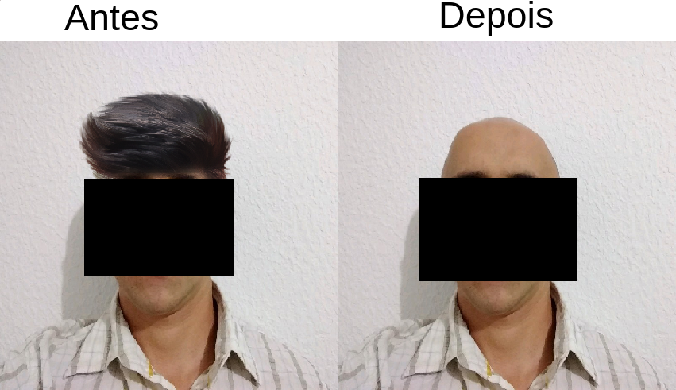

A Barberia Alura, fundada em 2019 e localizada em Quatro Barras é uma das barbearias mais populares da cidade da região metropolitana de Curitiba, porém, ela dá juz a tal atenção? A resposta é não! Existem vários problemas, seja com o preço, serviço e atendimento, todos possuem grandes falhas!
O preço, comparado a barbearias vizinhas é extremo, com uma diferença de 46%, a Barbearia Alura oferece cortes com quase o dobro do preço, o que seria justificável caso o serviço fosse de qualidade, porém não é!Muitas pessoas que visitaram a Barbearia Alura reclamaram do serviço, de acordo com uma testemunha que não quis ser identificada, o atendimento da barbearia é péssimo, e o serviço pior ainda, de acordo com a testemunha, o mesmo foi até a barbearia para resolver problemas em seu cabelo, porém voltou totalmente diferente e com seu cabelo raspado, foi permitido o compartilhamento de imagens, contanto que seu rosto permaneça anônimo.
Por conta deste péssimo serviço, exigimos uma diminuição do preço e também uma melhoria na qualidade do serviço, ajude o boicote e propague a mensagem, BOICOTE A BARBEARIA ALURA!
Gabriel Kazuya Matsumoto 1ºA